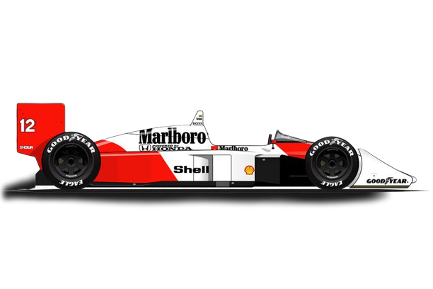

Quem foi?
Ayrton Senna da Silva (São Paulo, 21 de março de 1960 — Bolonha, 1 de maio de 1994) foi um piloto de Fórmula 1, empresário e filantropo brasileiro. Senna foi campeão da categoria de piloto três vezes, em 1988, 1990 e 1991. Começou sua carreira competindo no kart em 1973 e em "carros de fórmula" em 1981, quando venceu as Fórmulas Ford 1600 e 2000. Em 1983 alcançou o título de campeão do Campeonato Britânico de Fórmula 3 batendo vários recordes. Seu desempenho impulsionou sua ascensão à Fórmula 1, fazendo sua primeira aparição na categoria no Grande Prêmio do Brasil de 1984 pela equipe Toleman-Hart. Em sua primeira temporada, Senna pontuou em cinco corridas, fechando o ano com treze pontos e a nona posição na classificação geral dos pilotos. No ano seguinte, ingressou na Lotus-Renault, pela qual venceu seis grandes prêmios ao longo de três temporadas.
Em 1988, juntou-se ao francês Alain Prost na McLaren-Honda, com o qual teve grande rivalidade. Senna venceu oito etapas daquela temporada e sagrou-se campeão mundial pela primeira vez. Após a polêmica final de 1989 com Prost que resultou na segunda colocação do torneio, ele retomou o título em 1990, vencendo novamente na temporada seguinte, tornando-se o piloto mais jovem a conquistar um tricampeonato na Fórmula 1 até então. Em 1993, Senna foi vice-campeão, vencendo cinco corridas. Transferiu-se para a Williams em 1994, onde disputou apenas três etapas, a última sendo o Grande Prêmio de San Marino, onde se acidentou e faleceu. Ao todo, Senna participou de 161 grandes prêmios na Fórmula 1, alcançando 41 vitórias, 80 pódios, 65 pole positions e 19 voltas mais rápidas.
Além das corridas de carros, Senna dedicava-se a jet skis, motos, aeromodelos e principalmente helicópteros. Ele também administrava diversas marcas e empreendimentos, além de ter patrocinado vários programas de assistência filantrópica, principalmente os ligados a crianças carentes. Depois de morrer, sua irmã, Viviane Senna, fundou o Instituto Ayrton Senna, uma organização não governamental que oferece oportunidades de desenvolvimento humano a crianças e jovens de baixa renda. Além disso, o personagem Senninha foi criado com a intenção de atingir o público infantil com os ideais do piloto, como a superação, dedicação e o gosto pela vitória
Sua morte, assim como o funeral e velório, provocou uma das maiores comoções da história do Brasil, bem como repercussão mundial. Em pesquisas feitas com jornalistas especializados, pilotos e torcedores, foi amplamente considerado o melhor piloto da história da Fórmula 1 e um dos maiores automobilistas de todos os tempos. Em 1999, foi eleito pela revista Isto É o esportista do século XX no Brasil. No auge de sua carreira, era considerado o maior ídolo brasileiro, posto que mantém mesmo depois de quase três décadas após a sua morte.
“Meu maior erro? Acho que ainda está para acontecer.”
Senna tinha um estilo de pilotagem conhecido como "agressivo": Ele freava muito pouco na entrada das curvas; utilizando o freio motor para fazer reduções fortíssimas. Além disso, ele tangenciava mais tarde nas curvas, esterçando bastante o volante, e carregando mais velocidade à curva.
Ayrton Senna era um excelente acertador de carros. numa época em que a telemetria ou não existia, ou engatinhava, os engenheiros que trabalhava com o Ayrton afirmam que ele passava horas conversando com eles em busca das melhores soluções, que sempre funcionavam e os ganhos eram sentidos na pista. Não por menos, ele foi um dos poucos pilotos - se não o único - a testar pessoalmente o desenvolvimento tecnológico dos sistemas de freios.Na época em que Senna conduzia, os carros da F-1 possuíam câmbios manuais e três pedais. Com isso, Senna fazia como ninguém o uso de uma técnica de frenagem conhecida como "punta-taco", cujo objetivo era manter a rotação do motor mais alta nas reduções e evitar os "trancos". Além disso, Senna foi um dos primeiros a entender a importância da preparação física para os pilotos. Conforme dito por Gerhard Berger em seu livro, Senna "havia atingido um nível inteiramente novo em preparação física no mundo do automobilismo. Para conseguir fazer o melhor, é necessário treinar tão duro quanto qualquer atleta profissional. E Senna foi o primeiro a fazer isso".
Rei da Chuva

“Se a gente quiser modificar alguma coisa, é pelas crianças que devemos começar. Devemos respeitar e educar nossas crianças para que o futuro das nações e do planeta seja digno.”
No início da carreira, Ayrton não era um exímio piloto em condições de chuva. Em uma corrida de kart, ele fez uma péssima prova no molhado. Depois desse dia, Ayrton passou a treinar freneticamente quando chovia em São Paulo. Quando as primeiras gotas de chuva começavam a cair, Ayrton preparava o seu equipamento e partia rumo ao Kartódromo de Interlagos.
Exemplos de grandes corridas do Ayrton nestas condições são: GP de Mônaco de 1984, GP de Portugal em 1985, GP da Bélgica 1985, GP da Inglaterra 1988, GP da Alemanha 1988, GP da Japão 1988, GP da Bélgica 1989, GP do Canadá 1990, GP do Brasil 1991, GP de San Marino 1991, GP da Austrália 1991, GP do Brasil 1993, GP da Europa 1993 e GP da Japão 1993.
Morte
“Trabalhei muito para chegar ao sucesso, mas não conseguiria nada se Deus não ajudasse.”
Morte de Ayrton Senna e Grande Prêmio de San Marino de 1994 Ao participar da terceira corrida da temporada, o GP de San Marino, em Ímola, Senna rapidamente fez a terceira melhor volta da corrida, seguido por Michael Schumacher. Senna iniciara o que seria a sua última volta na F1; ele entrou na curva Tamburello (a mesma em que bateu Nelson Piquet com a Williams em 1987 e também onde bateu Berger com a Ferrari em 1989) e perdeu o controle do carro devido a uma barra de direção quebrada, seguindo reto e chocando-se violentamente contra o muro de concreto. A telemetria mostrou que Senna, ao notar o descontrole do carro, ainda conseguiu, nessa fração de segundo, reduzir a velocidade de cerca de 300 km/h (195 mph) para cerca de 200 km/h (135 mph). Os oficiais de pista chegaram à cena do acidente e, ao perceber a gravidade, só puderam esperar a equipe médica. Por um momento a cabeça de Senna se mexeu levemente, e o mundo, que assistia pela TV, imaginou que ele estivesse bem, mas esse movimento havia sido causado por um profundo dano cerebral. Senna foi removido de seu carro pelo Professor Sid Watkins, neurocirurgião de renome mundial pertencente aos quadros da Comissão Médica e de Segurança da Fórmula 1 e chefe da equipe médica da corrida, e recebeu os primeiros socorros ainda na pista, ao lado de seu carro destruído, antes de ser levado de helicóptero para o Hospital Maggiore de Bolonha onde, poucas horas depois, foi declarado morto.
